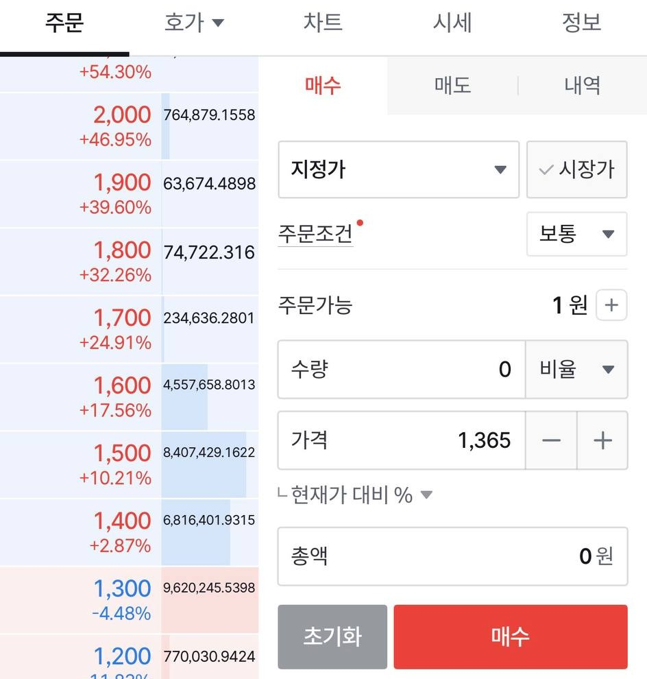
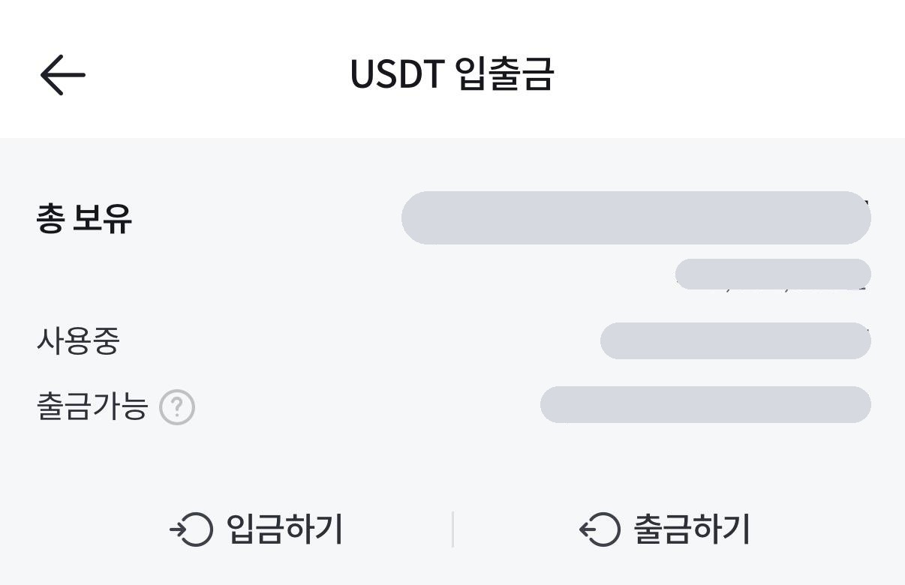
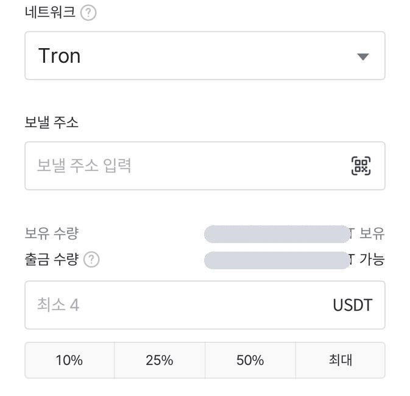
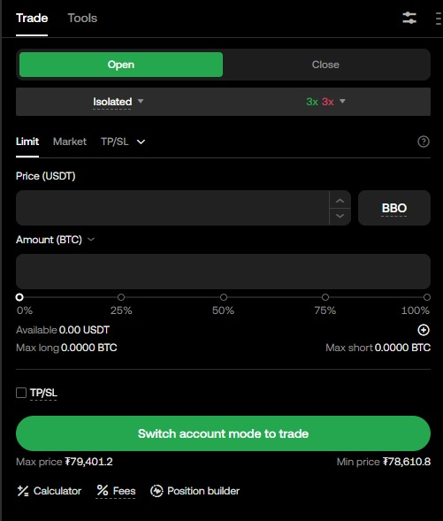

5단계 시작 가이드
OKX, 화면 그대로
따라만 하면 됩니다
필요한 단계부터 골라 보세요. 초록 네모만 순서대로 누르면 끝이에요.
이 버튼으로 들어가면 수수료 10% 할인이 걸린 채로 가입 화면이 열립니다.
필요한 단계부터 골라 보세요. 초록 네모만 순서대로 누르면 끝이에요.
이 버튼으로 들어가면 수수료 10% 할인이 걸린 채로 가입 화면이 열립니다.

주소창의 번역 아이콘을 누르면 한국어로 볼 수 있어요. 이 가이드는 화면에 실제로 찍히는 영어를 그대로 씁니다.

10% rebate rate applied을 펼치면 코드 S2ENA2에
010-1234-5678 → 101234567810% rebate rate applied이 그대로 보입니다.
출금할 때와 보안 확인에 이 번호로 문자가 옵니다. 안 쓰는 번호로 넣지 마세요.

입금 직전에 급하게 설정하는 게 최악의 순서.
돈 넣기 전에 미리 끝내두세요.

1/2 문자, 2/2 이메일 순으로 6자리를 넣습니다.
가입 때와 같은 방식이라 당황할 것 없어요.

이 값 하나면 남이 내 인증 코드를 그대로 만들어냅니다.
화면에 뜰 때 종이에 적어 따로 보관하세요.

연결할 때 나온 키를 적어두라는 게 이것 때문입니다.
키가 있으면 새 폰에서 그대로 되살립니다.

인증 전에는 입금 주소 자체가 화면에 안 뜹니다.
이름·생년월일은 신분증과 똑같이 넣으세요.

PC로 하고 있어도 다음 화면에서 폰 카메라로 넘어갑니다.
폰을 옆에 두고 시작하세요.

보통 몇 분에서 몇 시간이면 끝납니다.
그동안 따로 할 일은 없어요.
OKX에는 은행 계좌를 연결하는 창구가 없습니다. 그래서 이렇게 돌아갑니다.
주황 '빗썸 앱'은 빗썸에서, 초록 'OKX'는 OKX에서 하는 단계입니다.

어느 앱이든 '시장가 → 금액 → 매수'. 1 USDT는 대략 1,300~1,400원대입니다.

USDT입니다.왼쪽 위가 Funding으로 되어 있으면 제대로 온 겁니다.

보내는 쪽과 받는 쪽 네트워크가 다르면
코인이 사라지고 되돌릴 수 없습니다.

Trading이면 바로 거래 가능.반드시 복사 버튼을 쓰세요. 한 글자만 틀려도 돈이 사라집니다.

국내 거래소는 원화 입금 뒤 일정 시간 코인 출금을 막아둡니다. 여유를 두고 준비하세요.

OKX에서 Tron (TRC20)을 골랐으니 여기도 Tron. 트론은 빗썸 출금 수수료가 없고, 100만원 이상이면 트래블룰 확인 화면이 한 번 더 나옵니다.

앞 화면의 Deposit account가 Trading이었으면 건너뛰어도 됩니다.
Funding → Trading이면 맞습니다.
Spot은 레버리지 없는 현물 거래입니다.
이 가이드는 Futures 화면 기준입니다.

거래량이 많아 체결이 잘 되고 가격이 덜 튑니다.

Futures mode(화면에 따라 Spot and futures mode)를 고르고 확인. 처음 한 번만 하면 되고, 포지션이 열려 있으면 바꿀 수 없습니다.
격리는 이 주문에 넣은 돈까지만 잃습니다.
교차는 계좌에 있는 돈 전부가 담보라, 크게 물리면 다 날아갑니다.